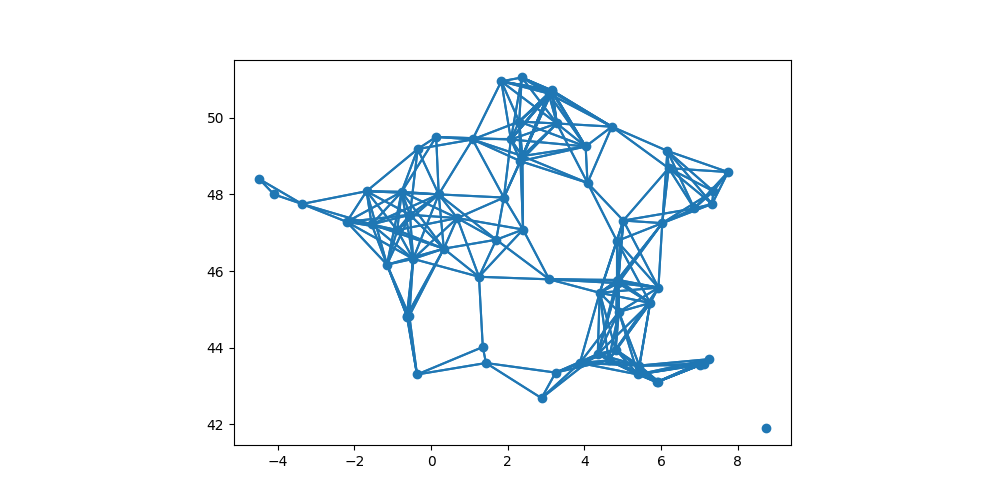

Projet graphe géographique
- François Brucker
On utilise un fichier de données pour créer un graphe de proximité géographique.
Nous allons dans ce projet utiliser deux bibliothèques d'analyse des données très utilisées :
- pandas pour la gestion des données sous forme de matrices nommées dataframe
- geopandas qui ajoute à pandas la gestion de données géographiques
Nous n'allons pas expliquer tous les tenants et aboutissants de ces bibliothèques mais j'espère que le fait de les utiliser vous donnera envie d'en savoir plus.
- Créer un dossier nommé
projet-chemin-min. C'est là que nous allons mettre tous les fichiers du projet. - Ouvrez le projet soit :
- dans vscode (
menu fichier > ouvrir le dossier...) - dans un notebook
- dans vscode (
Les données
Nous utilisons le fichier villes_france_30000.csv qui contient une liste des 30000 plus grandes villes françaises au format csv.
Téléchargez le fichier villes_france_30000.csv et placez le dans votre projet.
Vous pouvez regarder le fichier dans vscode (Installez le plugin Rainbow csv pour visualiser plus facilement les fichiers csv)
Si vous ouvrez ce fichier directement avec un excel français, cela ne fonctionnera pas correctement car le séparateur de champ est le ; pour un excel en langue française (la , étant le séparateur de décimal). C'est en revanche bien la , pour un excel en langue anglaise.
Ceci se produit également lorsque vous exportez des fichiers... Donc faites attention à ce que vos import/export soient correct.
Installation des bibliothèques
Nous allons utiliser python pour lire et traiter ces données. Commençons donc par installer les bibliothèques qui nous serons nécessaires. Dans un terminal de vscode, tapez :
python -m pip install pandas geopandas
Dans les fichiers python utilisant pandas et geopandas, on commencera toujours par les importer avec les lignes suivantes :
import pandas as pd
import geopandas as gpd
Créez un fichier main.py où l'on placera tout le code. Copiez/collez y les deux lignes précédentes.
Lecture des données
Testez les codes suivants pour vérifier que vous avez bien lu les données
Lecture du fichier dans un data frame
df = pd.read_csv("./villes_france_30000.csv", skipinitialspace=True)
On a créé un dataframe pandas qui contient nos données.
On a utilisé le paramètre skipinitialspace de la méthode read_csv de pandas pour avoir bien des villes qui ne commencent pas par des espaces.
Aperçu du contenu
print(df)
Si vous voulez voir le fichier en entier print(df.to_string())
Types des colonnes
Un dataframe est une sorte de tableau excel où chaque ligne a un type. Il est crucial de toujours vérifier que les types des colonnes sont bien ce qu'ils devraient être. Un type incorrect est souvent le signe d'un mauvais chargement ds données :
print(df.columns)
print(df.dtypes)
Vous devez obtenir le fait que :
- les colonnes
idx,INSEEetpopulationdoivent être des entiers, - les colonnes
latitudeetlongitudedoivent être des réels, - la colonne
nomdoit être une chaîne de caractère (nomméobjecten pandas)
idx int64
INSEE int64
nom object
latitude float64
longitude float64
population int64
dtype: object
Le code INSEE n'est pas le code postal. Voir ce lien par exemple pour en saisir les différences (et, au passage, faire un voyage dans le temps au niveau du site web).
Quel est le code INSEE de la ville de Marseille ?
solution
solution
Solution par morceaux :
- récupérer une colonne avec pandas :
df["nom"] - afficher un résumé de la colonne :
print(df["nom"])(si on veut tout afficher, il faut commencer par transformer la colonne en chaîne de caractère :print(df["nom"].to_string())) - récupérer les colonnes dont le com est marseille :
df["nom"] == "Marseille". C'est une liste de booléen - récupérer les lignes dont le nom est marseille :
df[df["nom"] == "Marseille"]
Solution finale :
print(df[df["nom"] == "Marseille"])
Données géographiques
Nos données contiennent à la fois des données :
- normales comme le nom u la population pour chaque ville
- géographes avec la latitude et la longitude
Pour pouvoir utiliser les données géographiques de façon efficace, on a l'habitude de les regrouper en classes particulières. Toutes les classes et possibles et leurs utilisations sont décrites dans la bibliothèque Shapely. Citons en 3 parmi le plus utilisées :
- des points pour nos coordonnées GPS
- des Polygones pour des surfaces connexes comme des arrondissements (pour les pays non connexes comme la France on utilisera des collections de polygone)
- lignes pour des chemins.
De plus, on utilise la bibliothèque GeoPandas (que vous avez déjà du installer) pour une utilisation aise de celle-ci.
Points à partir des coordonnées
On va créer un GeoDataFrame qui contient nos données.
La différence avec un DataFrame pandas est l'ajout d'une colonne geometry (obligatoire en geopandas) qui contient... La géométrie de nos données. Dans notre cas :
- géométrie est un point (longitude, latitude)
- le système de coordonnée est le système gps : https://epsg.io/4326
Faisons ça :
# ...
villes = gpd.GeoDataFrame(df, geometry=gpd.points_from_xy(df.longitude, df.latitude))
villes.set_crs("EPSG:4326")
Il est crucial de toujours bien renseigner le système de coordonnées (CRS pour Coordinate Reference Systems) lorsque l'on traite de données géographiques.
Représentation graphique
On utilise le tutoriel matplotlib pour représenter graphiquement nos villes :
# ...
import matplotlib.pyplot as plt
fig, ax = plt.subplots(figsize=(10, 5))
villes.plot(ax=ax)
plt.show()
Représentez graphiquement les villes de plus de 50000 habitants.
solution
solution
import matplotlib.pyplot as plt
fig, ax = plt.subplots(figsize=(10, 5))
villes[villes["population"] > 50000].plot(ax=ax)
plt.show()

Combien y en a-t-il ?
solution
solution
print(len(villes[villes["population"] > 50000]))
Supprimons l'île de France
On le voit sur la représentation graphique, l'île de France regroupe trop de granges villes par rapport au reste de la France métropolitaine : on va supprimer toutes les villes de l'île de France sauf Paris.
Pour cela, commençons par trouver l'île de France.
Utilisez cet outil pour déterminer un rectangle (une bounding box) englobant l'île de France
solution
solution
En très gros grain j'obtiens un polygone (avant dernier résultat) valant : 2.02,48.7,2.72,48.98.

Il faut transcrire ce rectangle en coordonnées géographique. Ceci est facile avec la bibliothèque shapely. On peut utiliser shapely.geometry.box dont les paramètres correspondant à la deuxième ligne du site déterminant les bounding box. Avec mes coordonnées ça fait :
import shapely.geometry
île_de_France = shapely.geometry.box(2.02, 48.7, 2.72, 48.98)
On peut maintenant utiliser la puissance de GeoPandas et de ses outils de gestion géographique. Ces outils sont principalement des méthodes de la classe GeoSeries qui correspond à la colonne geometry.
En utilisant la méthode GeoSeries.within(), déterminez le nombre de villes de plus de 50000 habitants en île de France (ou tout du moins dans votre bounding box).
solution
solution
print(len(villes[villes["geometry"].within(île_de_France)]))
En déduire le nombre (et les noms) des villes de plus de 50000 habitants de l'île de France.
solution
solution
On peut procéder de 2 façons. La plus simple est de commencer par extraire les villes de l'île de france, puis de ne garder que celle de plus de 50000 habitants :
v2 = villes[villes["geometry"].within(île_de_France)]
print(v2[v2["population"] > 50000])
print(len(v2[v2["population"] > 50000]))
Mais on peut aussi faire mieux et combien les 2 requêtes par un ET logique (qui se dit & en pandas et geopandas) :
print(villes[villes["geometry"].within(île_de_France) & (villes["population"] > 50000)])
print(len(villes[villes["geometry"].within(île_de_France) & (villes["population"] > 50000)]))
On retrouve bien les même villes, ouf.
On finalise le tout en gardant Paris :
v2 = villes[(~villes.geometry.within(île_de_France)) | (villes["nom"] == "Paris")]
grandes_villes = v2[v2["population"] > 50000]
En les représentant graphique, j'obtiens :

Distance entre villes
Commençons par extraire une ville du tableau. Par exemple Marseille.
La ligne suivante :
marseille_df = villes[villes["nom"] == "Marseille"]
Rend non pas une ville (une ligne du tableau), mais un dataFrame contenant toutes les lignes dont la colonne "nom" vaut "Marseille" (il n'y en a qu'une). Si on l'affiche avec print(marseille_df) :
idx INSEE nom latitude longitude population geometry
1 2 13200 Marseille 43.3 5.4 800550 POINT (5.40000 43.30000)
L'index d'une ligne est le 1er paramètre. Ici $1$. Attention, cet index ne correspond pas forcément au numéro de ligne du dataFrame.
Récupérer une ligne se fait avec les 2 méthodes :
.iloc[x]: pour récupérer la $i$ème ligne du dataFrame.loc[x]: pour récupérer la ligne d'indexxdu dataFrame
On voit qu'en pandas et geoPandas, on peut accéder aux données en utilisant des crochets [] de plusieurs manières. Supposons que l'on ait un dataFrame nommée df :
df[nom]rend la colonne (qui est de type Series ou GeoSeries si c'est une géométrie) de nomnom.df.nomoù nom est un nom de colonne fonctionne aussi, même si je suis moins fan de cette notation.df.loc[index]rend la ligne d'indexindexdf.iloc[i]rend la $i$ème ligne du dataFramedf[vecteur_booléen]rend un dataDrame des lignes oùvecteur_booléenest vrai.df.loc[index, nom]rend la colonne de nomnompour la ligne d'indexindexdf.iloc[i, nom]rend la colonne de nomnompour la $i$ème ligne
Utilisons ceci pour trouver Marseille dans les données
En notant que l'index d'une ligne d'un dataFrame est le 1er paramètre, retrouvez la ligne marseille du dataFrame marseille_df
solution
solution
Comme marseille est le 1ère ligne du dataFrame grandes_villes :
marseille = marseille_df.iloc[0]
En affichant le dataFrame marseille_df, on voit que l'index de la ligne est 1 (le 1er paramètre). On peut aussi connaître la liste des index d'un dataFrame, ici marseille_df avec la commande : marseille_df.index.tolist()
marseille = marseille_df.loc[1]
Déterminer la distance entre deux géométries se fait avec la méthode distance. Par exemple pour connaître la distance entre la première ville du dataFrame grandes_villes et marseille :
print(grandes_villes.iloc[0]["geometry"].distance(marseille["geometry"]))
Ce qui est pratique avec pandas, c'est qu'on peut aussi appliquer cette méthode à une colonne :
print(grandes_villes["geometry"].distance(marseille["geometry"]))
La dataFrame que l'on affiche est une dataFrame à autant de lignes que le nombre de grandes villes (avec le même index) et une seule colonne, la distance avec Marseille.
Si l'on veut connaître la distance entre deux villes deux à deux, on peut utiliser la méthode apply des colonnes :
d = grandes_villes["geometry"].apply(lambda x: grandes_villes["geometry"].distance(x))
print(d)
L'objet d est une dataFrame où :
- les index de lignes correspondent aux index des lignes de
grande_villes - les noms de colonnes correspondent aux index des lignes de
grande_villes - chaque cellule est une distance.
Si on veut connaître la distance entre la ville d'index $i$ et celle d'index $j$ :
i, j = 2, 91
print(d.loc[i, j])
Pour connaître l'index d'une ville, on peut procéder comme ça :
- la dataFrame :
grandes_villes - la dataFrame avec une ligne :
grandes_villes[grandes_villes["nom"] == "Marseille"] - les index de cette dataFrame :
grandes_villes[grandes_villes["nom"] == "Marseille"].index, qui est une colonne - l'index de l'unique élément :
grandes_villes[grandes_villes["nom"] == "Marseille"].index[0]
Quelle est la distance entre Marseille et Rennes ?
solution
solution
i = grandes_villes[grandes_villes["nom"] == "Marseille"].index[0]
j = grandes_villes[grandes_villes["nom"] == "Rennes"].index[0]
print(d.loc[i, j])
Graphe des grandes villes
On va créer un graphe :
- dont les sommets sont les villes de Métropole (hors île de France) de plus de 50000 habitants
- il y a une arête entre la ville $x$ et la ville $y$ si la distance entre les deux est inférieure à
MAX_DIST
En utilisant ce qui précède :
Gréez un graphe orienté $G=(V, E)$ et une valuation $f$ en python tel que :
- $V$ est l'ensemble des noms des villes de plus de 50000 habitants
- $E$ est l'ensemble des couples $(u, v)$ tel que la distance entre les villes de noms $u$ et $v$ est plus petite que 2
- $f(u, v)$ est la distance les villes de noms $u$ et $v$
solution
solution
MAX_DIST = 2
G = {}
f = {}
for i in grandes_villes.index:
nom_i = grandes_villes.loc[i]["nom"]
G[nom_i] = set()
for j in grandes_villes.index:
if d.loc[i, j] <= MAX_DIST:
nom_j = grandes_villes.loc[j]["nom"]
G[nom_i].add(nom_j)
f[(nom_i, nom_j)] = d.loc[i, j]
On peut ensuite représenter graphiquement ce graphe :
# ...
import matplotlib.lines as mlines
fig, ax = plt.subplots(figsize=(10, 5))
grandes_villes.plot(ax=ax)
for u in G:
i = grandes_villes[grandes_villes["nom"] == u].index[0]
point_i = grandes_villes.loc[i]["geometry"]
for v in G[u]:
j = grandes_villes[grandes_villes["nom"] == v].index[0]
point_j = grandes_villes.loc[j]["geometry"]
ax.add_line(mlines.Line2D((point_i.x, point_j.x), (point_i.y, point_j.y)))
plt.show()
J'obtiens ce graphe là (essayez d'obtenir le même) :

Ce graphe est-il connexe ?
Vous utiliserez l'algorithme connexité du cours pour déterminer les composantes connexes.
solution
solution
Non, la corse n'est pas attachée au continent avec une distance de 2. Les deux composantes connexes que l'on obtient sont :
{'Aix-en-Provence', 'Charleville-Mezieres', 'Rennes', 'Quimper', 'LaRochelle', 'Villeurbanne', 'Arles', 'Sarcelles', 'Orleans', 'Chambery', 'Montauban', 'Troyes', 'Laval', 'Brest', 'Calais', 'Nantes', 'Nice', 'Lorient', 'Saint-Etienne', 'Besancon', 'Strasbourg', 'Angers', 'Bordeaux', 'Caen', 'Rouen', 'Niort', 'Amiens', 'Mulhouse', 'Merignac', 'Tours', 'Pau', 'LeHavre', 'Grenoble', 'Limoges', 'Toulon', 'Beziers', 'LaSeyne-sur-Mer', 'Saint-Quentin', 'Antibes', 'Poitiers', 'Montpellier', 'Marseille', 'Venissieux', 'Metz', 'Nancy', 'Reims', 'Valence', 'Belfort', 'Toulouse', 'Nimes', 'Chateauroux', 'Bourges', 'Clermont-Ferrand', 'Saint-Nazaire', 'LeMans', 'Lyon', 'Lille', 'Paris', 'Dunkerque', 'Pessac', 'Avignon', 'Tourcoing', 'Chalon-sur-Saone', 'Cholet', "Villeneuve-d'Ascq", 'Cannes', 'Beauvais', 'Perpignan', 'Roubaix', 'Dijon', 'Colmar'}
et
{'Ajaccio'}
Quelles est la distance minimale à utiliser pour qu'il le soit ?
solution
solution
Il faut trouver la distance minimale en partant d'Ajaccio.
i = grandes_villes[grandes_villes["nom"] == "Ajaccio"].index[0]
print(d[i].sort_values())
C'est la ville d'index 4 ui est la plus proche :
print(grandes_villes.loc[4])
Ajouter au graphe l'arête minimale nécessaire pour rendre le graphe connexe.
solution
solution
On ajoute l'arête {Ajaccio, Nice} ainsi que sa valuation.
i = grandes_villes[grandes_villes["nom"] == "Ajaccio"].index[0]
proche = d[i].sort_values().index[1]
G['Ajaccio'].update({'Nice'})
G['Nice'].update({'Ajaccio'})
f[('Ajaccio', 'Nice')] = d.loc[i, proche]
f[('Nice', 'Ajaccio')] = d.loc[i, proche]
J'obtiens au final le graphe suivant :
Graphe géographique
TBD utilisation de networkx